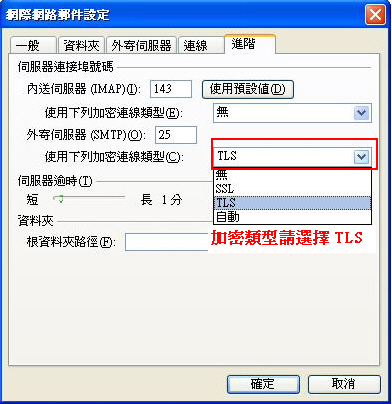

| 管理功能说明 |
Q1. |
hiBox管理者登入接口链接网址 |
Ans. |
https://apply.hibox.hinet.net/admlogin.php；或由www.hibox.hinet.net网页中的「管理者登入」亦可。 |
Q2. |
hiBox的帐务周期为何？账单上为何不能提供账单明细？我可以去哪里获知帐务明细？ |
Ans. |
1. hiBox的帐务周期为何？ hiBox费用采取后收制，出帐周期为每月21日至次月20日，账单周期如下： 1/21~ 2/20 的使用费为三月份账单 2/21~ 3/20 的使用费为四月份账单 3/21~ 4/20 的使用费为五月份账单 4/21~ 5/20 的使用费为六月份账单 5/21~ 6/20 的使用费为七月份账单 6/21~ 7/20 的使用费为八月份账单 7/21~ 8/20 的使用费为九月份账单 8/21~ 9/20 的使用费为十月份账单 9/21~10/20 的使用费为十一月份账单 10/21~11/20 的使用费为十二月份账单 11/21~12/20 的使用费为一月份账单 12/21~ 1/20 的使用费为二月份账单 2. 账单上为何不能提供账单明细？ 由于hiBox与其他加值产品(如hiHosting)在账单上是透过同一个会计科目”HiNet宽带企业电子商务费”，各产品帐务周期略有不同，故未提供帐务周期，尚祈海涵！ 3. 我可以去哪里获知帐务明细？ (1)若贵公司使用自己的Domain，您可至[管理者接口][帐务查询]查得。 (2)若贵公司使用hiBox的Domain(@hibox.hinet.net)，烦请拨冗致电0800-080365，将有专人为您服务，谢谢！ |
Q3. |
我把hiBox管理者接口的账号、密码忘记了，要怎么办？ |
Ans. |
请填写hiBox异动申请书，传真到(02) 2311-8186，系统将为您重新设定您所指定的管理者密码。系统设定成功后会e-mail告知原设定的管理者账号及异动密码成功的信息。 |
Q4. |
我要如何开设公司其他员工账号？ |
Ans. |
我们在您申请后，会以电子邮件方通知您，邮件信函中描述如下： 您可透过管理接口新增、删除、查询、修改信箱密码等功能轻松管理贵公司Domain Name内的hiBox账号。 网域：XXX 管理者账号：XXX 管理密码：XXX 请至http://www.hibox.hinet.net 管理者登入(http://apply.hibox.hinet.net/admlogin.php) 第一次登入后,请立即至[变更管理者密码]变更密码。 |
Q5. |
客户申请hiBox信箱超过50个时，应如何处理较佳？ |
Ans. |
若客户申请hiBox时，有指定专属的Domain Name，且账号超过50个时，建议客户将所有账号列表整理成电子文件，并透过管理者接口中「信箱管理」→「批次信箱异动」功能将列表一次汇入，密码可先统一设定后，使用者再自行登入webmail变更密码。 |
Q6. |
公司有多个部门，如何寄信给该部门下的所有员工？ |
Ans. |
您可为部门建立一个群组信箱，并将属于该部门的员工Email设为群组成员；发信时将群组信箱设为收件者，hiBox将会为您把信件寄送给各个群组成员。设定方式请登入管理者接口执行「系统管理」→「群组邮件」功能。 |
Q7. |
如何知道信件是否成功寄出？ |
Ans. |
登入管理者接口执行「检视」→「邮件追踪」功能，可查得您公司下所有账号寄出或收到信件的邮件记录。 |
| 申装与竣工与退租问题 |
Q1. |
DNS由客户自行管理、信息公司管理或由hiBox机房管理有何差别？ |
Ans. |
DNS由谁管理，没有费用或服务器运作上的差别；主要是DNS设定必须正确，否则客户信箱无法收到信件。 |
Q2. |
为什么我已经收到竣工通知，但账号却无法使用？ |
Ans. |
一般来说，台湾本岛 DNS 需要24小时的学习时间，因此当您与 hiBox 的工程师讨论完 DNS 设定事宜后尚需 24 小时才能正式使用。 注：国外的 DNS 需要2~7天的学习时间（视网络及距离而定），因此您国外客户寄给您的信约需2-7天，才会收的到喔！ |
Q3. |
DNS完成设定已经超过24小时了，为何我还是无法使用？ |
Ans. |
请您至 www.hibox.hinet.net 输入完整邮件账号(如xxx@abc.com.tw)及密码登入，看看您的邮件信箱内是否有信，如果有信，则需请您检查一下是否依我们提供的操作手册更改您的Outlook 或 Outlook Express 设定（请详细对照说明手册）；如果没有信，则可能是DNS学习时间(国内的 DNS 需要1~2天的学习时间，国外的 DNS 需要2~7天的学习时间（视网络及距离而定）才会收的到信喔~；如果您的 domain 不是 .tw 结尾（如msn.com），也视为此种情况。如果还是没法子收到信，请连络我们，我们再为您进行详细确认。 |
Q4. |
我没有收到竣工通知单，该怎么办？ |
Ans. |
如果您于七~十个工作日后未收到竣工通知单或竣工简讯通知，请拨电话给我们：0800-080365，我们会再寄一次竣工通知单给您。 |
Q5. |
hiBox可否在邮件软件Outlook Express或Outlook内收信呢？ |
Ans. |
是可以的，hiBox提供客户可使用邮件软件POP3的收取方式，将邮件收至计算机内，设定时请将接收邮件服务器及待发邮件服务器设定为www.hibox.hinet.net ；账号部份则填入完整的e-mail address(例如:abc@hibox.hinet.net) |
Q6. |
公司原本已经有自有网域的Email信箱，可否只移转部份账号到hiBox？ |
Ans. |
同一个网域 (domain) 只能存在一个 mail server，无法同时存在多个 mail server；也就是说，当贵公司决定使用自有网域申请 hiBox服务时，您原来的企业信箱需全数移转至 hiBox。 |
Q7. |
公司原本已经有自有网域的Email信箱，如何申请使用hiBox的传真型信箱？ |
Ans. |
如果只是想使用hiBox接收传真的功能，建议您可单独申请邮件网域为hibox.hinet.net的传真信箱，不需将公司所有Email信箱移转至hiBox。 |
| 备份信箱问题 |
Q1. |
同时发信给三个收件者，分别为hotmail、yahoo及gmail的账号。请问备份信箱会收到几封信？ |
Ans. |
hiBox邮件主机是根据收件者的网域(domain)来做发信的行为；根据上述的问题，hiBox发信主机将会发出三封信件给三个不同的网域收件者(domain)，所以备份信箱会收到三封备份的信件。 |
Q2. |
同时发信给三个都是gmail账号的收件者。请问备份信箱会收到几封信？ |
Ans. |
hiBox邮件主机是根据收件者的网域(domain)来做发信的行为；根据上述的问题，hiBox发信主机将会发出一封信件给同一个网域收件者(domain)，所以备份信箱会收到一封备份的信件。 |
Q3. |
客户发信给公司三个hiBox信箱，请问备份信箱会收到几封信？ |
Ans. |
备份机制是根据收件者的网域(domain)来执行信件备份；因为三个信箱都是同一个网域，所以备份信箱只会收到一封备份信件。 |
Q4. |
有时候同样的信件为什么会备份到两、三封？ |
Ans. |
如果寄件方的邮件主机根据收件者个数，将同一封信分成相对应封数寄到hiBox（例如有三个收件者的话，对方的邮件主机就将信件分成三封寄出），因为hiBox收到三封信件，所以您的备份信箱会收到三封备份信件。 |
Q5. |
使用 hiBox 云端邮件备份服务对组织的好处？ |
Ans. |
|
| 网站使用问题 |
Q1. |
请问剩余邮件空间大小，从那儿可以查询？ |
Ans. |
登入hiBox的webmail界面（http://www.hibox.hinet.net），进入收件匣，邮件列表下方会显示目前信箱总容量及已使用多少容量等信息 |
Q2. |
寄给对方的信是否有档案容量限制？ |
Ans. |
hiBox 寄送邮件时，一封邮件包括所有附件的大小不应超过 50 MB。 |
Q3. |
我忘记密码怎么办？ | ||||
Ans. |
|
Q4. |
透过Webmail寄信时，如何修改我的发件人显示名称？ |
Ans. |
登入hiBox的webmail界面（http://www.hibox.hinet.net），点选「选项设定」→「邮件」→「个人信息」页面中的「显示名称」内容即可。 |
Q5. |
我可以直接汇入或导出我的通讯簿吗？ |
Ans. |
可以的，您可以把您在Outlook/Outlook Express的通讯簿汇入至hiBox Webmail中，您亦可以把您在hiBox Webmail中的通讯簿导出一份保存。详细操作方式请至下载区下载通讯簿汇入、导出操作说明。 |
Q6. |
什么是自动回信？我该去那儿设定？ |
Ans. |
登入webmail接口后，选择「选项设定」→「邮件」→「自动回信」。您可以设定一段期间，在这期间内所有寄到您信箱的信件，系统会帮您自动回复。 |
Q7. |
什么是隔离区？ |
Ans. |
隔离区为存放被扫瞄出来为垃圾信的邮件的一个独立空间，不占原本您申请的信箱容量。 |
Q8. |
有效信件会不会被置放到隔离区？如果我发现有效信件被置入隔离区，我应该怎么办？ |
Ans. |
如果信件符合我们所设定的广告信规则，则该封信件将被置放到隔离区内，系统会每天定时寄送被隔离信件通知信，您可以在该信件内看到哪些信件被隔离，若是想将某封被隔离信件寄回您hiBox信箱，只需按「释出」，您也可以登入隔离区，一样也可以检视您被隔离的信件，与将被隔离信件释出，隔离区信件系统默认保留七天，请定时检视被隔离信件，以免遭系统清除。 |
Q9. |
hiBox提供的防垃圾邮件功能所产生的「隔离区」所占的空间是否列入信箱容量？ |
Ans. |
不会的，隔离区不会占信箱空间。 |
Q10. |
hiBox提供的防垃圾邮件功能如何运作？ | ||||
Ans. |
|
Q11. |
我常收到一些我不想收到的邮件，可以设定不要收到吗？ |
Ans. |
您可透过hiBox提供的个人邮件筛选功能，设定筛选规则将不想收到的信件直接丢弃。设定位置为：登入webmail接口后，选择「选项设定」→「邮件」→「邮件规则设定」。 |
Q12. |
什么是外部收信，我该如何设定？ |
Ans. |
外部收信指的是您收取hiBox以外信箱的邮件，登入webmail接口后，选择功能选项中的「收取外部邮件」；在窗口中填入您外部邮件的POP3服务器、用户账号、密码， 按下「收取」钮即完成设定。 |
Q13. |
如何在Outlook收完信后，Webmail还可以保留信件(保留服务器邮件备份)？ | ||||
Ans. |
|
Q14. |
为什么我的登入Webmail有时候会出现「阶段作业逾时，请重新登入」的讯息？ |
Ans. |
因为安全的考虑，您在书写邮件或是阅览邮件时，若是有超过60分钟没有与服务器联机（就是说没有按任何按钮或是换页）的动作，就会被服务器当作逾时，而被注销。 若是您没有超过60分钟就被注销，请确认以下2个动作，应该可以解决您的问题。 1.请先清除浏览器的暂存盘（工具→因特网选项→一般→删除档案），重新启动浏览器再试试。 2.确认浏览器没有设定proxy（工具→因特网选项→联机→局域网络设定→此页面中，有打勾的都取消。 |
Q15. |
无法开启新窗口（新邮件、转寄、回复），有关快显封锁问题。 |
Ans. |
目前常见会阻文件开新窗口的软件如下
|
Q16. |
hiBox WebMail网页登入是否支持其它语系使用接口？ |
Ans. |
是的，hiBoxWebMail网页目前支持繁体中文、简体中文以及英文的使用界面。 |
Q17. |
什么是「公用通讯簿」，要如何设定？ |
Ans. |
若您的邮件信箱有公司Domain Name，则管理者可以透过管理者接口去建立公司所有用户都可以使用的联络人名单，您在写信时直接点选「公用通讯簿」，就会带出「公用通讯簿」的联络人列表。 |
Q18. |
什么是「公司通讯簿」，要如何设定？ |
Ans. |
「公司通讯簿」不需要做任何设定，只要是您的邮件信箱有公司Domain Name，则您在写信时直接点选「公司通讯簿」，就会带出相同公司Domain Name的所有账号联络人清单。 |
Q19. |
为什么我收到的信件附加档案的档名都会变成「winmail.dat」？ |
Ans. |
这是透过outlook发信产生的一个问题，outlook在发有附件的邮件时，若显示模式不是html模式，则附件文件名都会被改成「winmail.dat」，只能透过outlook收信才有办法打开该附件，所以请用outlook发信的同事设定成html模式发信，或是收信端要用outlook收信才有办法开启这种邮件。 |
Q20. |
收件夹每页显示的邮件数量可以调整吗？ |
Ans. |
可以的，登入webmail接口后，选择「选项设定」→「邮件」→「布局」。您可以设定「每页的邮件」显示的邮件数量。 |
Q21. |
信箱爆了我该怎么办？ |
Ans. |
您登入webmail将不需要的邮件删除；或透过Outlook Express等收信软件，将邮件一次收下。 |
Q22. |
我已经将信丢到垃圾桶了，可是为何信箱空间还是不够？ |
Ans. |
在垃圾桶中的邮件还是会占去您的信箱空间，除非您将垃圾桶中的邮件清除，邮件所占的空间才会释放。 |
Q23. |
hiBox提到可以发送简讯，我要去那儿发送，费用如何计算？ |
Ans. |
您以在www.hibox.hinet.net登入您的email账号及密码后，即可以透过网 页发送简讯(请详见简讯发送操作手册)；费用依hiBox网站公告费率计收。 |
Q24. |
hiBox 是否提供 SSL 安全认证？ |
Ans. |
是的，webmail 可透过 https 协议，例如 https://www.hibox.hinet.net/ ，如果您使用 Outlook 或 Outlook Express 来收发邮件，则可以在账号设定画面中的『进阶』页签将 POP 及 SMTP 的『这个服务器需要安全联机』打勾。（若此选项打勾之后就无法传送及接收邮件了， 可能是因为贵公司的网络环境不支持安全联机，那么，请您将此勾取消即可恢复正常） |
Q25. |
为什么输入我的账号后，无法登入webmail？ |
Ans. |
若是您确认您的账号、密码无误，请您输入完整的邮件账号（包含＠domain name），应该就可以正常登入了。 |
Q26. |
寄送信件时收件人是否有人数限制？ |
Ans. |
有的，hiBox 寄送邮件时，一封邮件中的收件人数最多为 250 人。 |
Q27. |
登入到hiBox Webmail遇到 JavaScript Error 时该怎么办？ |
Ans. |
请先清除浏览器的暂存盘（工具→因特网选项→一般→删除档案），重新启动浏览器再试试。 |
Q28. |
hiBox是否有说明手册可供下载? |
Ans. |
有的，请至 hiBox下载区下载。 |
Q29. |
我可以修改自己的密码吗？ |
Ans. |
可以的，登入webmail接口后，选择「选项设定」→「全局」→「变更密码」即可。 |
Q30. |
这些常见问题说明还是无法解决我的问题，我该怎么办？ |
Ans. |
您可以拨打请拨0800-080365免付费客服电话询问，或是在hiBox首页留言（http://www.hibox.hinet.net/uwc/uwc/homepage_cn/contact.html），我们会有专人为您服务。 |
| Outlook使用问题(105/04新增) |
Q1. |
hiBox 是否提供 SSL 安全认证？ |
Ans. |
是的，webmail 可透过 https 协议，例如 https://www.hibox.hinet.net/ ，如果您使用 Outlook 或 Outlook Express 来收发邮件，则可以在账号设定画面中的『进阶』页签将 POP 及 SMTP 的『这个服务器需要安全联机』打勾。（若此选项打勾之后就无法传送及接收邮件了， 可能是因为贵公司的网络环境不支持安全联机，那么，请您将此勾取消即可恢复正常） |
Q2. |
我无法收发信件？ | ||||||
Ans. |
确认使用者账号是否设定正确(请详见操作手册)
|
Q3. |
我按照操作手册设定Outlook/Outlook Express中的POP及SMTP，在传送／收取邮件为何会出现输入账号和密码的窗口，我该输入什么 |
Ans. |
出现此一窗口皆为帐户名称设定错误；账户名称须为完整的email(例如:abc@hibox.hinet.net)。 |
Q4. |
使用者按下传送钮后，Outlook Express弹出错误窗口。 | ||||||
Ans. |
|
Q5. |
安装PC-cillin就无法使用Outlook收信？ |
Ans. |
PC-cillin为了对outlook收取的信件扫毒，会将outlook收件服务器(POP3)改成localhost，此时如果将POP-SSL开启，因PC-cillin无法处理SSL，会造成"无法使用〔安全密码验证〕登入服务器"的错误。解决方法为将SSL选项关闭，或将PC-cillin的POP3扫瞄关闭。 |
Q6. |
我在大陆地区收发电子邮件有问题该怎么办？ |
Ans. |
为提升两岸间邮件传输质量，hiBox已完成上海机房之建置作业。 若在大陆地区遇到收发电子邮件问题，可于hiBox首页→下载区，下载操作手册(大陆地区收发hiBox障碍排除设定) |
Q7. |
如何设定outlook收信后可以保留服务器上的信件？ |
Ans. |
若是您使用outlook则可以在「电子邮件账号」「因特网电子邮件设置」「其他设定」「进阶」页面勾选「在服务器上保留一份邮件副本」 若是您使用outlook Express则可以在「邮件账户」「进阶」页面勾选「在服务器保留邮件备份」 |
Q8. |
传送接收信件时出现 0x800ccc0D, 0x800ccc0E 0x800CCC0F错误该怎么办？ | ||||||
Ans. |
通常是个人计算机内软件或网络联机所造成，
|
Q9. |
传送接收信件时出现 0x800C0133 的错误该怎么办？ | ||||||||||||||||
Ans. |
若您收件匣的 "收件匣.dbx" 已超过 2GB 的储存量，便会很容易出现 0x800C0133 的错误，您除了可以在 Outlook Express 的 "本机文件夹" 中建立新文件夹，将部份信件移动过去，也可以按照下列步骤修正该问题。
|
Q10. |
hiBox的客户在国外可用邮件软件发信吗? |
Ans. |
是可以的，hiBox要求客户在发信时做账号密码的认证，故客户在国外利用其他ISP联机上网时，亦是可以直接利用hiBox信箱发信的。 设定方式：请在Outlook Express内 ->于 「待发邮件服务器」将「我的服务器需要验证」的选项打勾，并设定hiBox的账号及密码，即可顺利发信。 另外，在国外部份地点（如饭店、机场等）上网时，可能会发生无法透过hiBox主机寄信的情形；此时可询问当地提供网络的服务中心（饭店或机场柜台），是否有限制禁止联机至外部的SMTP主机。 |
Q11. |
在国外无法透过hiBox发信该怎么办？ |
Ans. |
您的smtp服务器，请重新设定为202.39.131.130再试看看，若是还不行，请再看下面说明。 请您开启，开始→程序集→附属应用程序→「命令提示字符」 输入telnet 202.39.131.130 25然后按Enter键 看看是否有类似以下响应 220 mta04.hibox.hinet.net-- Server ESMTP (iPlanet Messaging Server 5.2 HotFix 1.14 (built Mar 18 2003)) 若是出现联机失败的讯息，那可能是被当地网络提供者挡住了SMTP PORT，请上http://www.hibox.hinet.net登入收发信件，谢谢。 若在国外只能收信不能寄信，请询问当地网络的提供者，是否有限制他们的网络用户，在寄信时，只能使用他们的SMTP服务器，不能使用自己设定的SMTP服务器。 |
Q12. |
Outlook开启邮件看到乱码，该怎么办？ |
Ans. |
请修改该封信件的编码方式，「检视」、「编码」、选择其它的编码（比较有可能是简体中文GB2312、UTF-8、繁体中文Big5）。 |
Q13. |
寄送信件时收件人是否有人数限制？ |
Ans. |
有的，hiBox 寄送邮件时，一封邮件中的收件人数最多为 250 人。 |
Q14. |
用Outlook寄信时的附加档案，收件方反应档名变成winmail.dat。 |
Ans. |
这是Outlook寄件时的特殊设定所造成，只能透过outlook收信才有办法打开该附件，要避免非Outlook收件方造成困扰，请 寄件人 调整 Outlook发信的信件格式后，再重新寄送即可。为避免自己寄出的信件，也造成别人的困扰，也可调整自己的设定。打开 Outlook，到「工具」→「选项」→「邮件格式」，选为「HTML 或纯文本」都可以，不要再选择「Microsoft Outlook Rich Text」。 |
Q15. |
为何我使用Outlook2007设定SSL邮件加密寄信时会出现寄信失败画面？ |
Ans. |
若是透过Outlook2007寄送SSL加密邮件，请设定下拉选单「TLS」邮件加密方式寄送电子邮件。  |
Q16. |
这些常见问题说明还是无法解决我的问题，我该怎么办？ |
Ans. |
您可以拨打请拨0800-080365免付费客服电话询问，或是在hiBox首页留言（http://www.hibox.hinet.net/uwc/uwc/homepage_cn/contact.html），我们会有专人为您解决。 |
Q17. |
透过Outlook发信，出现错误讯息 |
Ans. |
Outlook错误讯息，请参考Outlook网页 https://support.microsoft.com/zh-tw/kb/813514#bookmark-mapi%20repair |
| 简讯使用问题 |
Q1. |
hiBox提到可以发送简讯，我要去那儿发送，费用如何计算？ |
Ans. |
您以在 www.hibox.hinet.net 登入您的email账号及密码后，即可以透过网页发送简讯(请详见简讯发送操作手册)；费用依hiBox网站公告费率计收。 |
Q2. |
网页上介绍传真型信箱客户享有每月赠送30通免费通知简讯，如果我的使用量超过30通，那么超过的部分，其通知简讯如何计费？ |
Ans. |
如果客户使用通知简讯超过赠送的 30通之后，请参见hiBox网站公告费率。 |
Q3. |
我透过 hiBox 的简讯系统发送的内容，有时会出现乱码？ | ||||
Ans. |
|
Q4. |
hiBox 的简讯系统可否输入「难字」或「造字」？ |
Ans. |
hiBox 的简讯系统仅支持「繁体中文(Big5)字集」及「英/数字」，难字及造字部份，因并非规范在「繁体中文(Big5)字集」中，无法正常显示在「对方手机」中，因此建议您避免输入这类型的文字。 |
| DNS设定与信箱移转问题(105/04新增) |
Q1. |
若 DNS 由 hiBox 代管， DNS 服务器该如何设定？ |
Ans. |
1.请确认贵公司 DNS 是否由 hiBox 代管，若您不确定，建议您先拨 0800-080-365 确认。 2.请设定 ns.hibox.hinet.net ns1.hibox.hinet.net |
Q2. |
若国外的 DNS 服务器不认识 ns.hibox.hinet.net时？ |
Ans. |
请改输入以下两组 ns.chthibox.net ns1.chthibox.net |
Q3. |
若 DNS 为自管，该如何设定? |
Ans. |
请务必先确认 hiBox 的申请是否已完成，若您不确定，建议您先拨 0800-080365 确认。 |
Q4. |
我收到了 hiBox 寄送的 DNS 通知信，但不知道该怎么设定时？ |
Ans. |
一般来说， DNS 通常由三个单位设定，一是贵公司的信息人员，二是邮件代管公司，三是网站代管公司，建议您先问问此三单位，若您确定是自己管理的，但是不知道该如何设定(操作)，我们建议您将 DNS 委由 hiBox 代管，以避免设定错误，造成邮件/网页无法运作。 |
Q5. |
DNS 由 hiBox 代管是否需要额外收费？ |
Ans. |
只要贵公司处于「正在」使用 hiBox 的状态, hiBox 则有「免收」DNS 代管费用的优惠。 |
Q6. |
若我们不使用 hiBox 了，可否将 DNS 委由 hiBox 代管？ |
Ans. |
hiBox 目前没有 DNS 代管业务，因此，若贵公司已不再租用 hiBox, DNS 代管信息将会在一周内删除，且不另行通知。因此，请务必在退租前确认 DNS 是否已先移转完成。 |
Q7. |
hiBox 的 DNS 服务器是否有提供「网页转址」的设定？ |
Ans. |
hiBox 并没有提供「转址设定」喔。若贵公司的域名在 hinet 注册，可以至 http://nweb.hinet.net 中设定转址，并请在设定完成后通知我们 (请拨 0800-080-365) |
Q8. |
DNS 的判别密码忘了，我该如何处理？ |
Ans. |
请连络贵公司的网域申请单位重新设定即可。 |
Q9. |
我们公司有 50 位员工，可否将其中 10 位转到 hiBox 就好呢（其它 40 位维持在原来的服务器）？ |
Ans. |
如果信箱使用的域名相同，就不能部份移转。您可以考虑以下的方案
|
Q10. |
信箱移转时，会不会有信件遗失的问题？ |
Ans. |
只要您依 hiBox 建议的移转流程，就不会有信件遗失的状况出现。 |
Q11. |
hiBox 建议的移转流程为何？ |
Ans. |
|
Q12. |
客户dns上层记录被他公司(如网页制作公司)变更，导致无法收到外部信箱来信 |
Ans. |
请至 http://mxtoolbox.com/DNSLookup.aspx 检查贵公司网域的A纪录是否正常，若异常请联络网域代管单位。 |
Q13. |
如何更改dns代管之上层数据(例如修改A记录) |
Ans. |
若DNS为hiBox代管，请拨客服专线；若DNS为其他DNS业者代管，请洽该业者之网站或客服。 |
Q14. |
域名过期，收不到外部信箱来信 |
Ans. |
可先至 http://www.whois365.com/tw/domain/ 查询域名是否过期，若过期请洽原网域注册单位。 |
Q15. |
客户已变更hibox代管纪录，确认是否已处理完成 |
Ans. |
请至 http://mxtoolbox.com/DNSLookup.aspx 检查贵公司网域的纪录是否正常，若异常可能为DNS设定完成但尚未生效，请等候24小时，若持续异常请连络hiBox客服。 |
Q16. |
因域名过期或dns设定异常收不到信，服务器可否回复信件? |
Ans. |
若因dns的设定异常导致没收到的信，无法由服务器回复(因为信件本身被送到了错误的地址，故无法在hiBox主机查得)。 |
Q17. |
客户无法使用twnic所提供之page parking服务 |
Ans. |
如要使用page parking，dns须强制由TWNIC代管。 |
| 传真型信箱使用问题 |
Q1. |
利用hiBox传真型信箱我可以如何管理传真讯息？ |
Ans. |
使用hiBox，您会收到一个电话号码（DID），它是您的专有邮件信箱识别号码。您可以将该DID号码作为个人的传真号码。传真的数据会直接送到您的邮件信箱，您可以在空闲的时候从任何地方通过个人计算机来接收信息。 |
Q2. |
我申请了hiBox传真型信箱，我该如何看传真内容？ |
Ans. |
您可以用Webmail/Outlook/Outlook Express等一般收发邮件方式，阅读您的传真，并可以直接删除除或转寄。 |
Q3. |
我申请了hiBox传真型信箱，我的客户该如何传真给我？ |
Ans. |
请客户比照一般传真方式即可，传真号码为hiBox配给您的传真号码(DID)。 |
Q4. |
我如何打印别人给我的传真？ |
Ans. |
如您为hiBox传真型信箱的用户，可使用Webmail/OutLook/OutLook Express方式收取您的传真信件，再把附加档打开，按打印即可。 |
Q5. |
我可以用我原本的电话号码或传真号码当作hiBox的DID号码？ |
Ans. |
因我们需做系统相关设定，故仅能由hiBox提供的号码使用。 |
Q6. |
hiBox客户的DID号码可否利用指定转接的方式将原来的传真号码转至hiBox？ |
Ans. |
是可以的，客户可利用市内电话指定转接的服务，申请将公司原来的传真号码，指定转接至hiBox的DID号码中。 |
Q7. |
hiBox的DID号码在国外可使用吗？ |
Ans. |
是可以的，若客户于国外欲传真给hiBox客户，若您的DID区码为(02)则可拨8862xxxxxxxx(x的部份为客户DID号码)，但请提醒客户，此费用为国际话费。 |
Q8. |
可否提供指定转接的操作方式？ |
Ans. |
指定转接服务为固网业务，申请、设定、费率等问题，请拨「123」服务电话洽询。 |
Q9. |
利用hiBox传真型信箱接收传真时，一次可以接收几页传真？会不会很容易让信箱爆满？ |
Ans. |
Fax因为是传成图形文件，所以要看内容，一张几乎都是字的A4传真邮件，容量大约是76K左右；传真型信箱一次可接收最多50页传真，超过部份就无法成功接收了。 |
Q10. |
hiBox传真型信箱的选号服务，是否开放旧客户选号？ |
Ans. |
目前不开放旧客户选号；如果真的要选号，以一退一租方式办理，须提醒您，先把所对应的邮件信箱内的信均收下来，再进行相关手续。 |
Q11. |
客户要传真到我的传真型信箱，但是一直无法成功，有可能是什么原因？ |
Ans. |
若您的传真线路并未忙线(客户并未听到忙线音)，有可能是传真机器与hiBox传真型设备不兼容的原因。目前hiBox发现部分兄弟牌及Panasonic复合机在传真给hiBox传真型信箱时，会发生无法正常传输的现象。hiBox团队将针对此类现象，陆续提供不兼容的传真机型号，以利参酌，谢谢！ |
Q12. |
网页上介绍传真型信箱客户享有每月赠送30通免费通知简讯，如果我的使用量超过30通，那么超过的部分，其通知简讯如何计费？ |
Ans. |
如果客户使用通知简讯超过赠送的30通之后，请参见hiBox网站公告费率。 |
| 收发信件问题(105/04新增) |
Q1. |
无法收到或延迟收到对方信件，我该如何处理？ |
Ans. |
您可以登入在hiBox的管理者接口中搜寻邮件.
或请您拨打0800-080365免付费客服电话或在hiBox首页（http://www.hibox.hinet.net/uwc/uwc/homepage_cn/contact.html），提供发件人、收件者与时间点等相关信息给客服人员或留言，由hiBox工程师为您解决问题。 |
Q2. |
对方寄信给我遭hiBox退信，我该如何处理？ |
Ans. |
请您拨打0800-080365免付费客服电话或在hiBox首页（http://www.hibox.hinet.net/uwc/uwc/homepage_cn/contact.html），提供对方被退信信件或发件人、收件者、时间点与退信讯息给客服人员或留言，由hiBox工程师为您解决问题。 |
Q3. |
寄出的信件遭退方退信，我该如何处理？ |
Ans. |
请您拨打0800-080365免付费客服电话或在hiBox首页（http://www.hibox.hinet.net/uwc/uwc/homepage_cn/contact.html），提供被对方退信信件或发件人、收件者、时间点与退信讯息服人员或留言，由hiBox工程师为您解决问题。 |
Q4. |
对方寄给我的信件不想经过垃圾信过滤或一直被误判成垃圾信，我该如何处理？ |
Ans. |
请您拨打0800-080365免付费客服电话或在hiBox首页（http://www.hibox.hinet.net/uwc/uwc/homepage_cn/contact.html），提供对方的email address或domain给客服人员或留言，由hiBox工程师为您将对方email address或domain设定为白名单。 |
Q5. |
我的信件不想经过垃圾信过滤，该如何处理？ |
Ans. |
请您拨打0800-080365免付费客服电话或在hiBox首页（http://www.hibox.hinet.net/uwc/uwc/homepage_cn/contact.html），提供您的email address给客服人员或留言，由hiBox工程师为您将您的email address设定不过滤垃圾信。 |
Q6. |
如果收到未拦截圾圾信，该如何处理？ |
Ans. |
如果您收到垃圾邮件时,您可以在hiBox Webmail中检举垃圾邮件。 |
Q7. |
如果收到未拦截病毒邮件，该如何处理？ |
Ans. |
请您将未拦截到的病毒邮件另存盘案及进行压缩(例如：zip)，并拨打0800-080365免付费客服电话，由hiBox工程师进行检测。 |
Q8. |
寄信后收到退信，并附带退信讯息 |
Ans. |
状况 : 对方邮件空间或对方邮件服务器有问题
常见讯息 :
1. Reason: 4.1.0 - Unknown address error
('451', ['Requested mail action not taken: mailbox unavailable'])
2. Reason: 4.3.2 - Not accepting messages at this time
('421', ['Too many bad recipients'])
3. Reason: 4.1.0 - Unknown address error
('451', ['4.3.2 Please try again later'])
4. Reason: 4.1.0 - Unknown address error
('450', ['4.7.1 : Recipient address rejected: Service is unavailable'])
解决方式 : 请对方信息管理人员检查或是继续等待重试发送信件。
状况 : 收件方服务器设定流量限制
常见讯息 :
1. Reason: 4.1.0 - Unknown address error
('450', [': Recipient asked sender to resend. Greylisted for xxx seconds'])
2. Reason: 4.1.0 - Unknown address error
('451', ['4.7.1 Greylisting in action, please come back in 00:05:00'])
3. Reason: 4.1.0 - Unknown address error
('450', [': Recipient address rejected: Greylisted, see http://xxx.xxx.xx'])
4. Reason: 4.1.0 - Unknown address error
('451', ['4.7.1 Greylisting in action, please come back later'])
解决方式 :
1. 等待系统重新寄信
2. 或 联系收件者服务器之邮件系统管理员，将 hiBox IP (210.71.187.1～254)
加入白名单，并拨打 hiBox 免付费客服专线( 0800-080-365 )。
状况 : 对方邮件空间不足
常见讯息 :
1. Reason: 4.1.0 - Unknown address error
('552', ['mail size or count over quota.'])
2. Reason: 4.1.0 - Unknown address error
('552', ['Requested mailbox exceeds quota.'])
解决方式 : 请通知收件者清理信箱空间。
状况 : hiBox被对方列入黑名单
常见讯息 :
Reason: 4.1.0 - Unknown address error
('450', ['4.7.1 : Recipient address rejected:
Policy rejection: Abuse. Sending server blacklisted.'])
解决方式 :
请联系收件者服务器之邮件系统管理员，将 hiBox IP (210.71.187.1～254)
加入白名单，并拨打 hiBox 免付费客服专线( 0800-080-365 )。
状况 : 信件被对方列入垃圾信
常见讯息 :
Reason: 4.3.0 - Other mail system problem
('451', ['DT:SPM mx3, lwmowKCbCwFBXdZLEER9AA--.1892S2, please try again)
解决方式 :
从对方提供的网页上查到，『DT:SPM』代表被对方列入垃圾信，
所以请发件人重新修改邮件内容和邮件主旨或内文部分的文字。
状况 : 因为对方的政策管理而延迟寄信
常见讯息 :
Reason: 4.1.0 - Unknown address error
('450', ['4.7.1 : Recipient address rejected: Policy Rejection- Please try later.'])
解决方式 : 等待系统重新寄信 |
Q9. |
透过邮件软件收信，重复收信 |
Ans. |
若Outlook设定为POP收信，可能会因为网络不稳导致重复收信的问题；若时常发生此问题，建议可改设为IMAP收信。 |
Q10. |
邮件软件收不到信、信件遗失 |
Ans. |
若发生信件遗失的状况，可检查是否有使用其他共享账号装置自动收信(POP)并将服务器端的副本删除，导致其他装置收不到该封信。 |